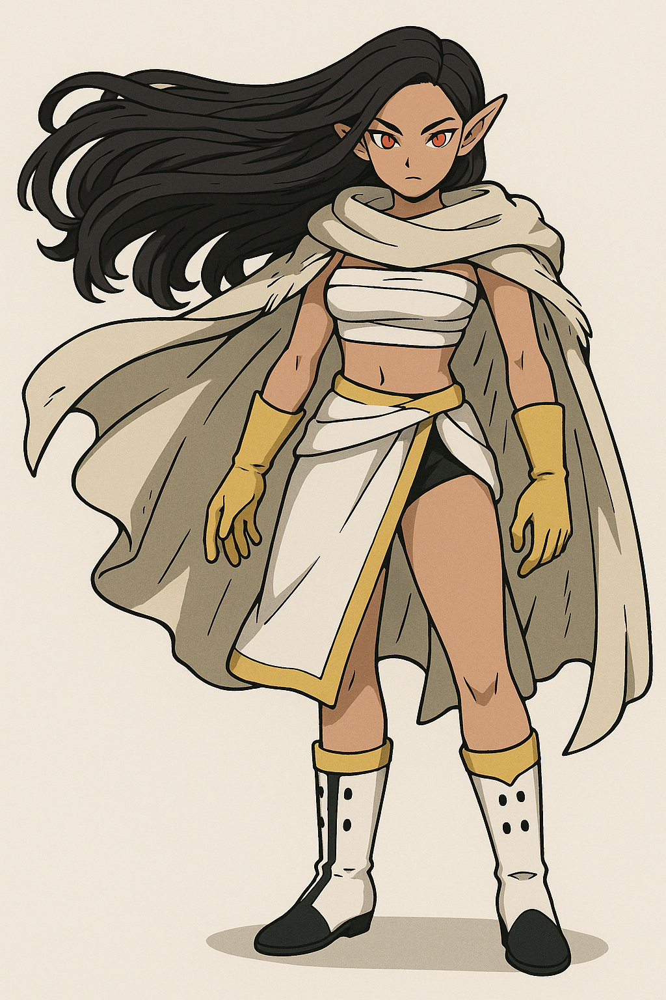

Selara Veyune

Name & Alias: Selara Veyune – The Skyborne Bloom
Age / Race / Role: 17 / Sylphkin-Human Hybrid / Aerial Combatant, Support Specialist
Appearance: Graceful figure with long flowing black hair, gold-trimmed battlewear, and a sacred cloak that floats like petals in the wind.
Affinities & Energy Types: Wind, Ultraviolet Light
Threat Tier: A-Rank
Core Stats (0–10):
• Power: 6
• Speed: 9
• Technique: 9
• Intelligence: 8
• Defense: 7
• Aura Control: 9
Signature Abilities:
• Waltz of the Soaring Bloom
• Petalburst Shield
• Galeveil Embrace
• Ultraviolet Bloom Ray
• Skyward Dancer’s Pulse
Personality Summary: Calm, noble-hearted, and tactical. A guardian of grace and protector of those beneath her wings.
Faction or Allegiances: Independent (Allied with Wakari’s Team)